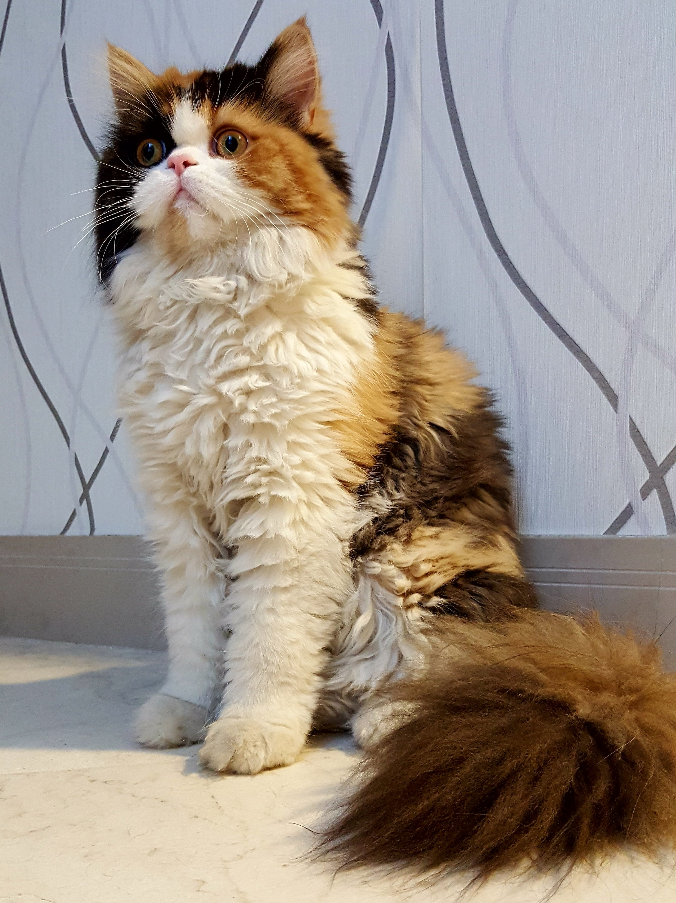
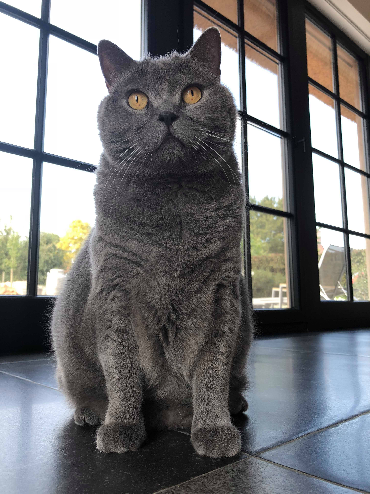

Animais Fantásticos
- 
-


- 
-

-

Raposa
Raposas são pequenos a médios mamíferos onívoros pertencentes a vários gêneros da família Canidae. As raposas têm o crânio achatado, orelhas triangulares verticais, focinho pontiagudo e ligeiramente arrebitado e uma cauda longa e espessa.
Doze espécies pertencem ao grupo monofilético de "raposas verdadeiras" do gênero Vulpes. Aproximadamente outras 25 espécies atuais ou extintas são parte do grupo parafilético das raposas sul-americanas ou do grupo periférico, que consiste na raposa-orelhas-de-morcego, raposa-cinzenta e raposa-das-ilhas.
As raposas vivem em todos os continentes, exceto a Antártida. De longe, a espécie mais comum e difundida de raposa é a raposa vermelha (Vulpes vulpes) com cerca de 47 subespécies reconhecidas. A distribuição global das raposas, juntamente com sua ampla reputação de astúcia, contribuíram para sua proeminência na cultura popular e no folclore em muitas sociedades ao redor do mundo. A caça à raposa com matilhas de cães, há muito uma atividade estabelecida na Europa, especialmente nas Ilhas Britânicas, foi exportada por colonos europeus para várias partes do Novo Mundo.
Esquilo
Os esquilos pertencem a uma grande família de mamíferos roedores, de pequeno e médio porte, conhecida como Sciuridae. No Brasil, são também conhecidos como serelepe, caxinguelê, caxinxe, quatimirim, quatipuru, agutipuru ou acutipuru. Na Galiza e em algumas zonas de Portugal, também são conhecido por esquio[5]. Os esquilos estão espalhados por quase todo o mundo, a maioria nas zonas de climas temperado ou tropical, mas também em algumas zonas de clima frio. Como todos os roedores, possuem presas fortíssimas, com que roem facilmente sementes, principalmente bolotas.
As sementes são as principais fontes de alimentação, mas também consomem insetos e frutas. Quando coletam alimento, enterram algumas sementes que encontram, sendo que algumas chegam a germinar, como pinhões e coquinhos, acabando por plantar árvores como araucária e jerivá.
Durante a gestação, os pais preparam o ninho para receber os filhotes. Constroem ninhos com folhas e galhos, em ramos muito altos, em árvores como a cajarana, para abrigarem as suas crias da chuva e do vento.
Urso
Os Ursos (latim científico: Ursidae) constituem uma família de mamíferos plantígrados, geralmente de grande porte, contendo os ursos e os pandas.
Algumas características comuns dos ursos são pelagem espessa, rabo curto, o olfato desenvolvido e as garras não retráteis. Os ursídeos são geralmente animais omnívoros, mas se alimentam principalmente de carne.
A maioria dos ursos costumam preparar-se para hibernar durante o inverno, comendo grandes quantidades de comida antes de entrar em uma toca para o período de sono profundo.
Os ursos existem em todos os continentes, em exceção na África, embora algumas fontes afirmem terem avistado o Urso nandi, mas sem comprovarem a sua existência.
Lobo
O lobo (também chamado de lobo-cinzento; nome científico: Canis lupus) é uma espécie de mamífero canídeo do gênero Canis. É um sobrevivente da Era do Gelo, originário do Pleistoceno Superior, cerca de 300 mil anos atrás. É o maior membro remanescente selvagem da família canidae. O sequenciamento de DNA e estudos genéticos reafirmam que o lobo-cinzento é ancestral do cão doméstico (Canis lupus familiaris), contudo alguns aspectos desta afirmação têm sido questionados recentemente.
Uma série de outras subespécies do lobo-cinzento foram identificadas, embora o número real de subespécies ainda esteja em discussão. Os lobos-cinzentos são tipicamente predadores ápice nos ecossistemas que ocupam. Embora não sejam tão adaptáveis à presença humana como geralmente ocorre com as demais espécies de canídeos, os lobos se desenvolveram em diversos ambientes, como florestas temperadas, desertos, montanhas, tundras, taigas, campos e até mesmo em algumas áreas urbanas. O lobo-cinzento (Canis lupus), o lobo-vermelho (Canis rufus), o lobo-etíope (Canis simensis) e o lobo-dourado (Canis anthus) são as únicas quatro espécies classificadas como lobos. Os demais lobos correspondem a subespécies derivadas dessas quatro espécies.
"Lobo" originou-se do termo latino lupus, lupum.
Os lobos possuem uma audição bastante apurada, a ponto de serem capazes de ouvir a queda de folhas das árvores durante o outono. Sua visão noturna é a mais aguçada da família dos canídeos.
Macaco
Macaco é um termo de origem africana (provavelmente do banto makako) utilizado como designação comum a todas as espécies de símios ou primatas antropoides. É aplicada restritivamente no Brasil aos cebídeos (ou macacos do Novo Mundo) em geral. No sentido estrito, "macaco" refere-se às espécies de primatas pertencentes ao género Macaca.
A designação mico se origina, segundo o Dicionário Aurélio, do caraíba (karib) continental. É bastante usada no Brasil, onde costuma aplicar-se às espécies do gênero Cebus, no Sul, e às espécies de pequeno porte, ou saguis, no Norte.
O termo sagui se origina do tupi antigo sagûi e também designa os macacos calitriquídeos de pequeno porte.
Ainda segundo Cunha, o termo símio, que também designa os macacos (tendo sido registrado no português dos séculos XVI e XVII), vem do latim simius, de simus, "que tem o nariz chato".
Gato
O gato (Felis silvestris catus), também conhecido como gato caseiro, gato urbano ou gato doméstico, é um mamífero carnívoro da família dos felídeos, muito popular como animal de estimação. Ocupando o topo da cadeia alimentar, é predador natural de diversos animais, como roedores, pássaros, lagartixas e alguns insetos. Segundo pesquisas realizadas por instituições norte-americanas, os gatos consistem no segundo animal de estimação mais popular do mundo, estando numericamente atrás apenas dos peixes de aquário
A primeira associação dos gatos com os humanos da qual se tem evidência ocorreu há cerca de 9 500 anos, período mais antigo ao estimado anteriormente, que oscilava entre 3 500 e 8 000 anos. A subfamília Felinae, que agrupa os gatos domésticos, surgiu há cerca de 12 milhões de anos, expandindo-se a partir da África subsariana até alcançar as terras do atual Egito. Acredita-se que o gato-selvagem-africano (Felis silvestris lybica) era seu antepassado imediato. Adicionalmente, evidências genéticas assinalam que os gatos domésticos atuais partilham uma procedência direta com os gatos selvagens do Oriente Médio.
Existem cerca de 250 raças de gato doméstico, cujo peso variável entre 2,5 a 12 kg coloca a espécie na categoria de animal doméstico de pequeno a médio porte. Assim como ocorre com algumas raças de cães que apresentam esta mesma faixa de peso, o gato doméstico pode viver entre quinze e vinte anos. Dados censitários apontam que nos Estados Unidos existem mais gatos domésticos do que cachorros. Estimativas recentes indicam que, em breve, o Brasil irá mostrar essa mesma característica, passando a deter maior população felina do que canina em suas residências.